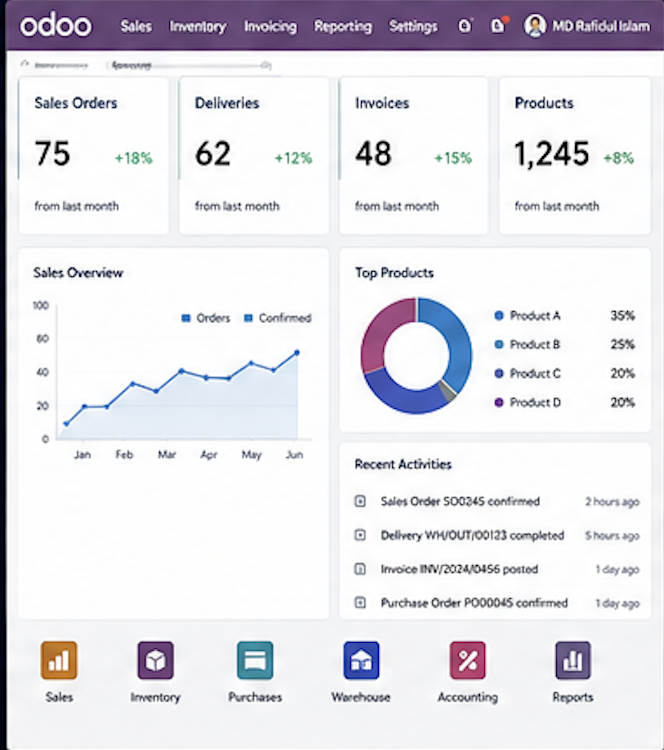
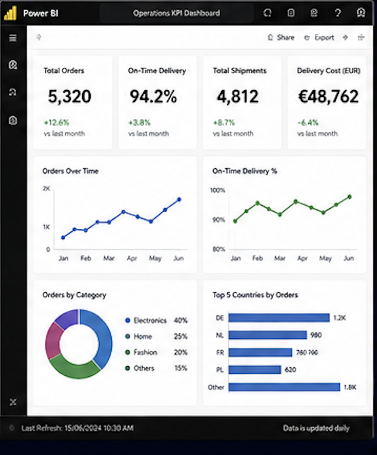
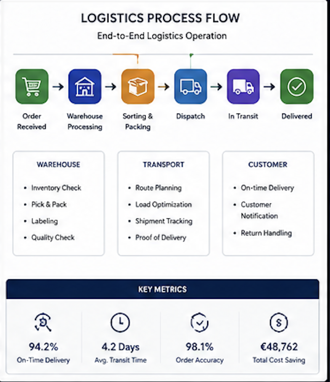
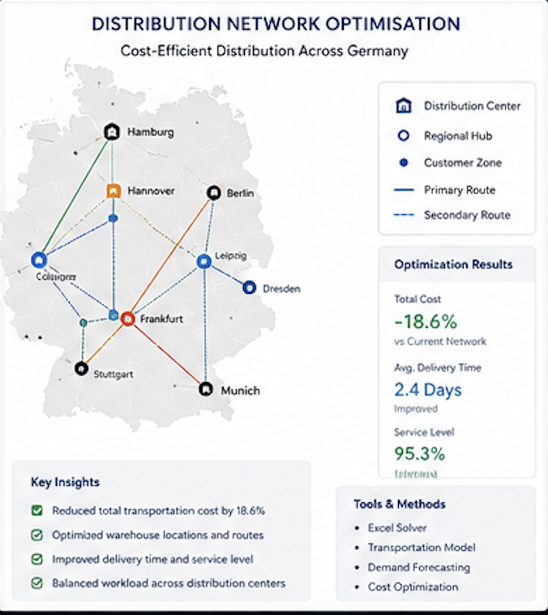
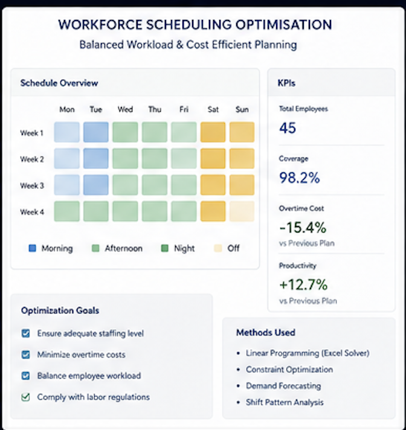
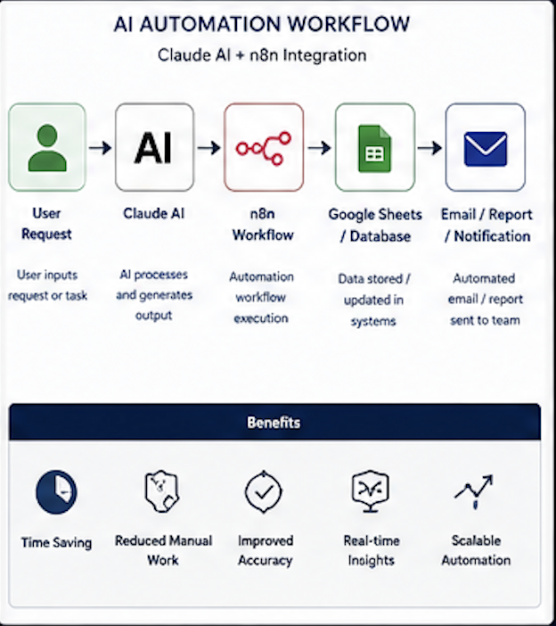
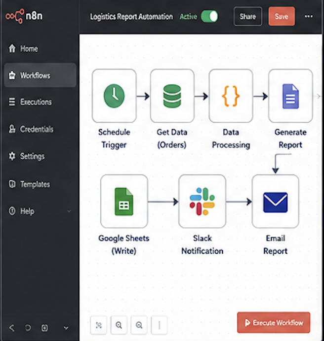
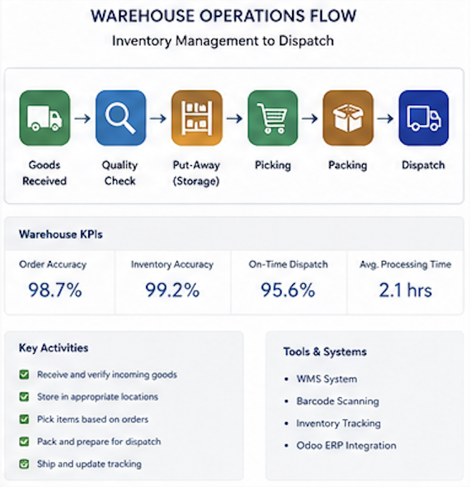

Connecting daily operations with data, systems and structured reporting — across ERP workflow coordination, logistics execution, KPI dashboards and supply chain documentation.
Operations Research & Business Analytics at Otto-von-Guericke-Universität Magdeburg
Hands-on operations at Amazon DAH1, Deutsche Post and ALDI Nord
Odoo ERP workflow coordination across Sales, HR, Accounting, Operations and Projects
Excel and Power BI KPI dashboards for operational visibility and management decisions
I am an operations and logistics professional based in Magdeburg, Germany, currently completing my MSc in Operations Research & Business Analytics at Otto-von-Guericke-Universität Magdeburg.
My career sits at the intersection of operational execution and data-driven reporting. I have worked in ERP-based office coordination at ComfNet Solutions GmbH in Hamburg, supported international logistics documentation at QEP Express, and built hands-on experience in German warehouse and courier operations at Amazon DAH1, Deutsche Post and ALDI Nord.
Before Germany, I led regional business operations and sales coordination at Antron Express Bangladesh, where I applied Lean and Kanban principles to improve workflow visibility and reporting discipline.
I am most effective in roles that need someone who can bridge daily operations, structured documentation, ERP systems and KPI reporting — and communicate clearly across teams and cultures.
The following cards represent a mix of academic projects (verified from MSc coursework), professional learning artefacts based on real work exposure, and clearly labelled concept / demo projects. No confidential company data is shared.
CSS-only workflow diagrams illustrating my understanding of key operational processes.

Demo Odoo-style ERP workflow showing sales, inventory, invoicing and reporting visibility.

Operations KPI dashboard concept for delivery performance, orders, cost and reporting.

End-to-end logistics workflow from order received to warehouse, dispatch, delivery and KPI reporting.

MSc-based optimisation concept showing cost-efficient distribution network planning.

Academic scheduling optimisation concept for workload balancing and staffing efficiency.

Concept workflow showing how Claude and automation tools can support reporting and task automation.

Sample n8n-style workflow for data processing, notification and reporting automation.

Warehouse process flow covering receiving, quality check, storage, picking, packing and dispatch.
⚠️ These visuals are portfolio demo case studies and concept workflows created to demonstrate my understanding of operations, ERP, logistics, analytics and automation. They do not contain confidential company data.
Open to Business Operations, Logistics, Supply Chain, ERP Support and Data Reporting positions across Germany. Willing to relocate.